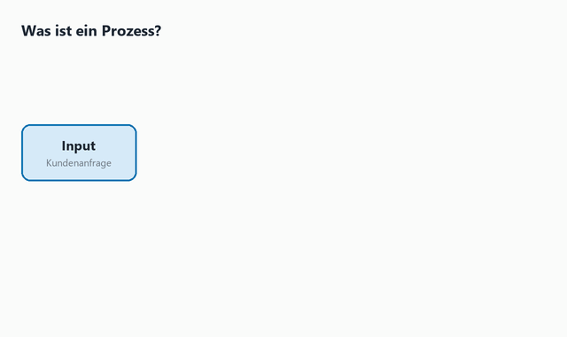
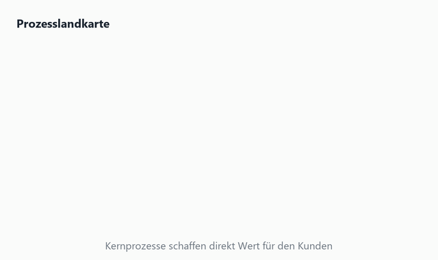
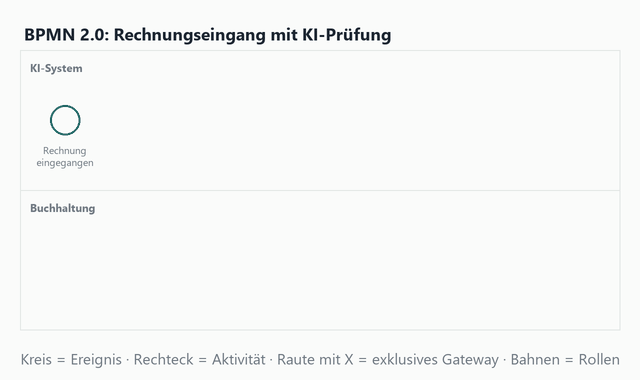
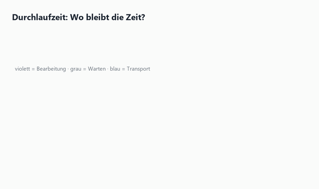
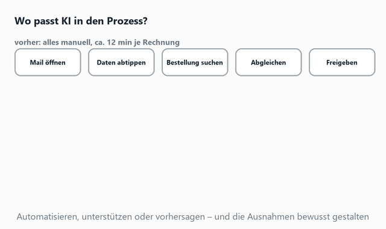
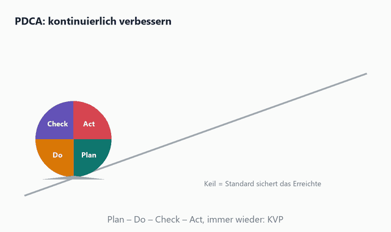
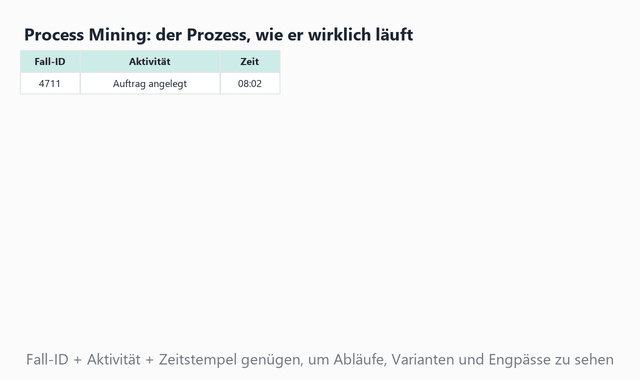

Die meisten KI-Projekte scheitern nicht am Modell, sondern am Prozess drumherum. Wer KI einführen will, muss zuerst verstehen, wie Arbeit heute fließt: Wer macht was, in welcher Reihenfolge, wie lange, mit welchen Fehlern? Dieses Modul zeigt, wie Sie KI-relevante Prozessziele festlegen, Prozesse erheben, mit BPMN modellieren und analysieren, Ressourcen disponieren und Prozesse mit Kennzahlen, Monitoring und kontinuierlicher Verbesserung steuern.
Kaffee kochen ist ein Prozess: Bohnen und Wasser rein (Input), mahlen, aufbrühen (Tätigkeiten), Kaffee raus (Output) – für jemanden, der ihn trinken will (Kunde). Jeden Morgen gleich, mit klarem Anfang und Ende.
Ein Geschäftsprozess ist eine wiederkehrende, logisch zusammenhängende Folge von Tätigkeiten mit definiertem Anfang (Auslöser) und Ende (Ergebnis), die einen Input in einen Output mit Wert für einen internen oder externen Kunden umwandelt.

Prozess oder Projekt? Ein Prozess wiederholt sich (Rechnungen prüfen), ein Projekt ist einmalig (KI-System für die Rechnungsprüfung einführen). Prozessorientierung heißt: Man denkt vom Kunden her über Abteilungsgrenzen hinweg – statt jede Abteilung einzeln zu optimieren.
Prozess = wiederkehrende Folge von Tätigkeiten mit Auslöser, Ergebnis und Kunde.

| Prozessart | Zweck | Beispiele |
|---|---|---|
| Kernprozesse (Wertschöpfung) | schaffen direkt Wert für den externen Kunden | Vertrieb, Auftragsabwicklung, Produktion, Service |
| Unterstützungsprozesse | ermöglichen die Kernprozesse | Personal, IT, Einkauf, Buchhaltung, Instandhaltung |
| Managementprozesse (Führung) | steuern das Unternehmen | Strategie, Planung, Controlling, Qualitätsmanagement |
Prozesse werden hierarchisch verfeinert: Prozesslandkarte → Hauptprozess → Teilprozess → Aktivität → Arbeitsschritt. Für KI-Projekte arbeitet man meist auf Ebene der Teilprozesse und Aktivitäten.
Kernprozesse schaffen Kundenwert, Unterstützungsprozesse ermöglichen ihn, Managementprozesse steuern.
„Ich will fitter werden“ ist ein Wunsch. „Bis 1. Juni laufe ich 10 km unter einer Stunde“ ist ein Ziel – man weiß, ob man es erreicht hat.
Prozessziele werden SMART formuliert: spezifisch, messbar, attraktiv/akzeptiert, realistisch, terminiert. Jedes Ziel bekommt eine Kennzahl (KPI), einen Ausgangswert und einen Zielwert.
| Zieldimension | Kennzahl (Beispiele) |
|---|---|
| Zeit | Durchlaufzeit, Bearbeitungszeit, Antwortzeit, Termintreue |
| Qualität | Fehlerquote, Reklamationen, Erstlösungsquote, Nacharbeit |
| Kosten | Kosten je Vorgang, Personalstunden je Fall |
| Kunde | Zufriedenheit, Beschwerden, Wiederkauf |
| KI-spezifisch | Automatisierungsquote, Anteil manueller Nachprüfung, Modellgüte, Fehlalarme je Tag |
Beispiel: „Bis 30.06.2027 sinkt die durchschnittliche Durchlaufzeit einer Eingangsrechnung von 6 auf 2 Arbeitstage; mindestens 70 % der Rechnungen werden ohne manuellen Eingriff verarbeitet, bei höchstens 1 % Fehlbuchungen.“
Ohne messbares Prozessziel mit Ausgangs- und Zielwert lässt sich der Nutzen von KI weder planen noch nachweisen.
„Die KI soll den Prozess effizienter machen“ ist kein Ziel. In Prüfung und Transferarbeit bekommt nur ein SMART-Ziel mit Zahlen volle Punkte.
| Methode | Stärke | Schwäche |
|---|---|---|
| Interview | Hintergründe, Gründe, Probleme | beschreibt den Soll-Ablauf, nicht den echten |
| Workshop | mehrere Sichten, gemeinsames Bild | Gruppendynamik, laute Stimmen dominieren |
| Beobachtung (Gemba, „vor Ort“) | zeigt, wie wirklich gearbeitet wird | aufwendig, Beobachtete verhalten sich anders |
| Dokumentenanalyse | Formulare, Anweisungen, Organigramme | oft veraltet |
| Datenanalyse / Process Mining | objektiv, alle Fälle, Zeiten exakt | nur was im System protokolliert ist |
| Zeitaufnahme, Selbstaufschreibung | belastbare Zeiten | Aufwand, Akzeptanz (Mitbestimmung beachten!) |
Methoden kombinieren: Interviews für das Warum, Beobachtung und Daten für das tatsächliche Wie.
Zeit- und Leistungserfassungen einzelner Beschäftigter berühren die Mitbestimmung des Betriebsrats (§ 87 Abs. 1 Nr. 6 BetrVG). Früh einbinden, Daten aggregieren.
Bevor man ein Haus renoviert, braucht man einen Grundriss auf einer Seite – nicht gleich jede Steckdose. SIPOC ist der Grundriss eines Prozesses.
SIPOC beschreibt einen Prozess grob in fünf Spalten: Suppliers (Lieferanten), Inputs, Process (5–7 Hauptschritte), Outputs, Customers. Die Wertstromanalyse (aus dem Lean Management) zeigt Material- und Informationsfluss mit Zeiten und trennt wertschöpfende von nicht wertschöpfenden Tätigkeiten.
| S – Lieferant | I – Input | P – Prozess | O – Output | C – Kunde |
|---|---|---|---|---|
| Lieferanten, Post | Eingangsrechnung (PDF, Papier) | empfangen → auslesen → mit Bestellung abgleichen → freigeben → buchen → zahlen | gebuchte, bezahlte Rechnung | Lieferant, Buchhaltung, Controlling |
Sieben Arten der Verschwendung (Lean, „Muda“): Überproduktion, Wartezeiten, Transport, Überbearbeitung, Bestände, unnötige Bewegung, Fehler/Nacharbeit. In Büroprozessen kommen Medienbrüche (Papier → Abtippen) und Suchzeiten dazu – genau dort setzt KI häufig an.
SIPOC grenzt den Prozess ab, die Wertstromanalyse zeigt, wo Zeit und Wert verloren gehen.
Ein Fahrplan zeigt allen dasselbe: welche Züge, welche Halte, wo umsteigen. BPMN ist der Fahrplan eines Prozesses – mit festen Symbolen, die alle gleich lesen.
BPMN 2.0 (Business Process Model and Notation, Standard der OMG, auch ISO/IEC 19510) ist die verbreitetste Notation für Geschäftsprozesse. Sie ist für Fachleute lesbar und präzise genug für die Automatisierung.

| Element | Symbol | Bedeutung |
|---|---|---|
| Startereignis | dünner Kreis | Auslöser des Prozesses |
| Zwischenereignis | doppelter Kreis | etwas passiert unterwegs (z. B. Frist, Nachricht) |
| Endereignis | dicker Kreis | Prozessende |
| Aktivität (Task) | abgerundetes Rechteck | eine Tätigkeit; Typen z. B. Benutzer-, Service-, Skript-Task |
| Exklusives Gateway | Raute mit X | genau ein Weg wird gewählt (entweder – oder) |
| Paralleles Gateway | Raute mit + | alle Wege gleichzeitig; schließendes Gateway wartet auf alle |
| Inklusives Gateway | Raute mit Kreis | ein oder mehrere Wege |
| Pool / Lane | Rahmen / Bahn | Organisation / Rolle, die die Aktivitäten ausführt |
| Sequenzfluss | durchgezogener Pfeil | Reihenfolge innerhalb eines Pools |
| Nachrichtenfluss | gestrichelter Pfeil | Kommunikation zwischen Pools |
BPMN: Kreise sind Ereignisse, Rechtecke Aktivitäten, Rauten Entscheidungen, Bahnen Zuständigkeiten.
Sequenzflüsse dürfen keine Pool-Grenzen überqueren – zwischen Unternehmen (z. B. Kunde und Lieferant) verwendet man Nachrichtenflüsse.
Die EPK stammt aus dem ARIS-Konzept (Scheer) und ist in Deutschland, besonders im SAP-Umfeld, verbreitet. Ereignisse (Sechsecke) und Funktionen (abgerundete Rechtecke) wechseln sich ab; logische Verknüpfungen sind UND (∧), ODER (∨) und exklusives ODER (XOR).
Regel der EPK: Auf ein Ereignis folgt eine Funktion, auf eine Funktion ein Ereignis. Nach einem Ereignis darf keine ODER- oder XOR-Verzweigung kommen – Ereignisse können nicht entscheiden.
| BPMN 2.0 | EPK | |
|---|---|---|
| Standard | international (OMG, ISO) | ARIS, kein internationaler Standard |
| Zuständigkeiten | Pools und Lanes | erweiterte EPK (eEPK) mit Organisationseinheiten |
| Automatisierung | direkt ausführbar in Workflow-Systemen | vor allem Dokumentation |
| Lesbarkeit | kompakt | viele Ereignisse, lang |
EPK: Ereignis – Funktion – Ereignis im Wechsel; BPMN ist der internationale Standard und automatisierbar.

| Schwachstelle | Woran man sie erkennt | KI-Ansatz |
|---|---|---|
| Medienbruch | Daten werden abgetippt (Papier, PDF, E-Mail) | Dokumentenerkennung, Extraktion |
| Engpass | Stau vor einem Schritt | Priorisierung, Vorsortierung, Prognose der Last |
| Schleifen / Nacharbeit | Rückfragen, Korrekturen | Plausibilitätsprüfung am Anfang |
| Suchzeiten | Wissen steckt in Köpfen und Ordnern | Wissensassistent mit RAG |
| Schnittstellen | viele Übergaben zwischen Abteilungen | erst Prozess verbessern, dann automatisieren |
Die meiste Zeit geht in Wartezeiten und Übergaben verloren – dort liegt der Hebel, nicht im schnelleren Arbeiten.
Einen schlechten Prozess zu automatisieren macht ihn nur schneller schlecht. Erst vereinfachen, dann mit KI unterstützen.

| Rolle der KI | Was sie tut | Beispiel |
|---|---|---|
| Automatisieren | erledigt einen Schritt selbst | Daten aus Rechnungen auslesen |
| Unterstützen | schlägt vor, Mensch entscheidet | Antwortentwurf für Kundenmails |
| Vorhersagen | liefert Prognosen für Planung | Auftragseingang nächste Woche |
| Priorisieren / Sortieren | bringt Wichtiges nach vorn | dringende Störungsmeldungen zuerst |
| Prüfen | findet Auffälligkeiten | Abweichungen zwischen Rechnung und Bestellung |
Eignungsfragen für einen Prozessschritt: Kommt er häufig vor? Gibt es Daten? Sind Regeln schwer zu formulieren, aber Beispiele vorhanden? Ist ein Fehler verkraftbar oder abfangbar? Lässt sich der Nutzen messen? Je mehr „ja“, desto besser.
KI im Prozess: Routine automatisieren, Entscheidungen unterstützen, Ausnahmen bewusst an Menschen geben.
Ein Restaurant plant für Samstagabend mehr Köche ein als für Dienstagmittag. Wer zu wenig plant, hat lange Wartezeiten; wer zu viel plant, bezahlt Leerlauf.
Disponieren heißt, Ressourcen so zuzuteilen, dass die Prozessziele bei vertretbaren Kosten erreicht werden. Grundlage sind erwartete Mengen, Bearbeitungszeiten und verfügbare Kapazitäten.
Rechenbeispiel Personalbedarf: 600 Fälle pro Tag, 6 Minuten je Fall, 7 produktive Stunden je Person: 600 · 6 / 60 = 60 Stunden → 60 / 7 ≈ 8,6 → 9 Personen. Mit KI-Vorsortierung (3 Minuten je Fall): 30 Stunden → 4,3 → 5 Personen – die frei werdende Kapazität wird umgeplant (Weiterbildung, andere Aufgaben), nicht automatisch gestrichen.
KI-spezifische Ressourcen: Rechenleistung (GPU, Cloud-Kontingente), Tokenbudget, Speicher, Lizenzen, Daten- und Labelaufwand sowie Personal für Betrieb und Nachprüfung. Lastspitzen planen (Monatsende, Saison).
Ressourcenbedarf = Menge × Zeit je Fall / verfügbare Zeit – mit Puffer für Spitzen und Ausfälle.
| Kennzahl | Berechnung | Beispiel |
|---|---|---|
| Durchlaufzeit | Ende − Start je Fall, Mittelwert/Median | Median 2,5 Tage |
| Termintreue | pünktliche Fälle / alle Fälle | 94 % |
| Fehlerquote | fehlerhafte / alle Fälle | 1,8 % |
| Erstlösungsquote | ohne Rückfrage gelöste / alle | 82 % |
| Kosten je Fall | Prozesskosten / Fallzahl | 4,20 € |
| Automatisierungsquote | ohne manuellen Eingriff / alle | 68 % |
| Durchsatz | erledigte Fälle je Zeiteinheit | 140 je Tag |
Gute Kennzahlen sind relevant für das Ziel, eindeutig definiert, automatisch erhebbar und beeinflussbar. Sie werden in Systemen zusammengefasst, z. B. der Balanced Scorecard mit vier Perspektiven: Finanzen, Kunden, Prozesse, Lernen und Entwicklung (Modul 14).
Wenige, klar definierte Kennzahlen je Prozess – mit Zielwert, Verantwortlichem und Messrhythmus.
Was gemessen wird, wird optimiert – auch auf Kosten anderer Ziele. Wer nur die Bearbeitungszeit misst, bekommt schnelle, aber fehlerhafte Arbeit. Kennzahlen immer im Paar (Zeit und Qualität).
Die Heizung im Haus hat ein Thermostat: Sie misst ständig, vergleicht mit dem Sollwert und regelt nach. Prozesse brauchen genau diesen Regelkreis.
Prozessüberwachung (Monitoring) vergleicht laufend Ist- mit Sollwerten und löst bei Abweichungen Maßnahmen aus. Prüfungen (Audits) bewerten in Abständen, ob Prozesse wirksam, regelkonform und dokumentiert sind.
| Instrument | Zweck |
|---|---|
| Dashboard mit Ampel | Kennzahlen auf einen Blick, Abweichungen sichtbar |
| Regelkarte (Statistische Prozesskontrolle) | Werte außerhalb Mittelwert ± 3σ zeigen Störungen (Modul 3) |
| Internes Audit | Abläufe gegen Vorgaben prüfen (z. B. ISO 9001) |
| Management-Review | Leitung bewertet Prozessleistung und entscheidet Maßnahmen |
| KI-Monitoring | Modellgüte, Drift, Anteil Nachprüfung, Fehlalarme (Modul 6, 7) |
Messen – vergleichen – eingreifen: Ohne Regelkreis bleibt jedes Prozessziel ein Wunsch.
§ 5 nennt ausdrücklich „(Veranlassen von) KI-relevanten Prozessüberwachungen, -prüfungen und -bewertungen“. Nennen Sie in Antworten immer, wer überwacht, was gemessen wird und was bei Abweichung passiert.

| Ansatz | Ablauf | Eignung |
|---|---|---|
| PDCA (Deming) | Plan (planen) – Do (im Kleinen umsetzen) – Check (prüfen) – Act (standardisieren) | jede Verbesserung, auch KI-Piloten |
| KVP / Kaizen | viele kleine Verbesserungen durch alle Beschäftigten | Kulturthema, dauerhaft |
| Six Sigma – DMAIC | Define – Measure – Analyze – Improve – Control | datengetriebene Projekte mit messbarem Qualitätsproblem |
| Lean | Verschwendung beseitigen, Fluss herstellen | Durchlaufzeiten, Bestände |
„Six Sigma“ steht für ein Qualitätsniveau von etwa 3,4 Fehlern pro Million Möglichkeiten. DMAIC passt gut zu KI-Projekten: Problem definieren, Ist messen, Ursachen mit Daten analysieren, verbessern (z. B. mit einem Modell), Ergebnis dauerhaft absichern (Monitoring).
PDCA im Kleinen, DMAIC für datengetriebene Verbesserungsprojekte – und immer mit einem Standard absichern.

Process Mining rekonstruiert Prozesse aus den Ereignisprotokollen (Event Logs) der IT-Systeme. Mindestens nötig: Fall-ID, Aktivität, Zeitstempel. Ergebnis: die tatsächlichen Abläufe mit Häufigkeiten, Varianten, Schleifen, Wartezeiten und Engpässen.
Drei Typen: Discovery (Prozess entdecken), Conformance Checking (Ist gegen Soll prüfen), Enhancement (Modell mit Zeiten, Kosten, Engpässen anreichern).
Process Mining ist ideal vor einem KI-Projekt (Wo hakt es wirklich?) und danach (Hat sich der Ablauf verbessert?). Werkzeuge: z. B. Celonis, Signavio, Disco, PM4Py (Python). Bei personenbezogenen Protokollen gelten Datenschutz und Mitbestimmung – Auswertungen auf Prozess-, nicht auf Personenebene.
Fall-ID + Aktivität + Zeitstempel genügen, um den echten Prozess sichtbar zu machen.
| Rolle | Aufgabe |
|---|---|
| Prozesseigner (Process Owner) | verantwortet Ziele, Kennzahlen und Weiterentwicklung des gesamten Prozesses über Abteilungsgrenzen |
| Prozessmanager / -koordinator | steuert den Prozess im Alltag, beobachtet Kennzahlen, stößt Verbesserungen an |
| Prozessbeteiligte | führen Aktivitäten aus, melden Probleme, bringen Verbesserungen ein |
| Methodenexperte (z. B. Lean, Six Sigma) | unterstützt Analyse und Verbesserung |
| KI-Verantwortlicher / Model Owner | verantwortet das Modell im Prozess: Güte, Monitoring, Neutraining, Dokumentation |
In einer RACI-Matrix (Modul 9) wird je Aufgabe festgelegt, wer verantwortlich (Responsible), rechenschaftspflichtig (Accountable), zu konsultieren (Consulted) und zu informieren (Informed) ist. Für KI-Prozesse ist besonders wichtig, wer bei Modellfehlern entscheidet – Prozesseigner oder Model Owner.
Jeder Prozess braucht einen Eigner mit Verantwortung über Abteilungsgrenzen – und jedes Modell im Prozess einen Verantwortlichen.
Tragen Sie Ihre Antworten in die Felder ein. Der Rechner in Lektion 8 hilft bei Durchlaufzeiten und Personalbedarf.
1. Monatlicher Rechnungsversand. 2. Einführung eines KI-Chatbots im Kundenservice. 3. Bearbeitung eingehender Reklamationen.
1. Prozess · 2. Projekt · 3. Prozess. Je 1 Punkt.
Ordnen Sie zu (Kern-, Unterstützungs- oder Managementprozess): 1. Lohnabrechnung. 2. Montage der Produkte. 3. Jahresplanung. 4. IT-Support.
1. Unterstützung · 2. Kern · 3. Management · 4. Unterstützung. Je 1 Punkt.
Formulieren Sie ein SMART-Ziel für den Einsatz eines KI-Assistenten im Kundenservice eines Versandhändlers.
Beispiel: „Bis 31.12.2027 beantwortet der KI-Assistent 40 % der Kundenanfragen zu Lieferstatus und Rücksendung ohne Weiterleitung; die durchschnittliche Erstantwortzeit sinkt von 18 auf 2 Stunden, bei einer Kundenzufriedenheit von mindestens 4,2 von 5.“ Spezifisch, messbar, realistisch, terminiert und mit Qualitätskennzahl (4 P.).
Was bedeutet: 1. Raute mit X 2. Raute mit + 3. dicker Kreis 4. gestrichelter Pfeil zwischen zwei Pools?
1. exklusives Gateway (genau ein Weg) · 2. paralleles Gateway (alle Wege) · 3. Endereignis · 4. Nachrichtenfluss. Je 1 Punkt.
Ein Reklamationsfall hat 30 Minuten Bearbeitungszeit, 450 Minuten Wartezeit und 20 Minuten Transport (Weiterleitung). Berechnen Sie Durchlaufzeit und Prozesseffizienz.
Durchlaufzeit 30 + 450 + 20 = 500 Minuten (2 P.). Effizienz 30 / 500 = 6 % (2 P.) – der Hebel liegt bei den Wartezeiten.
Täglich 480 Fälle mit je 9 Minuten Bearbeitung, 7 produktive Stunden je Person. a) Wie viele Personen werden benötigt (aufrunden)? b) Wie viele, wenn KI die Bearbeitung auf 4 Minuten je Fall senkt?
a) 480 · 9 / 60 = 72 h; 72 / 7 ≈ 10,3 → 11 Personen (2 P.). b) 480 · 4 / 60 = 32 h; 32 / 7 ≈ 4,6 → 5 Personen (2 P.).
Im Monat wurden 2.000 Rechnungen verarbeitet, 1.360 davon ohne manuellen Eingriff; bei 36 Rechnungen gab es Fehlbuchungen. Berechnen Sie Automatisierungsquote und Fehlerquote in %.
Automatisierungsquote 1.360 / 2.000 = 68 % (1,5 P.); Fehlerquote 36 / 2.000 = 1,8 % (1,5 P.).
In einer EPK folgt auf das Ereignis „Antrag eingegangen“ direkt ein XOR-Verknüpfer mit zwei Funktionen „Antrag genehmigen“ und „Antrag ablehnen“. Was ist falsch, und wie korrigieren Sie es?
Ereignisse können nicht entscheiden; nach einem Ereignis darf keine XOR-/ODER-Verzweigung folgen (1 P.). Korrektur: Funktion „Antrag prüfen“ einfügen, danach XOR mit den Ereignissen „Antrag ist genehmigungsfähig“ / „Antrag ist nicht genehmigungsfähig“, gefolgt von den jeweiligen Funktionen (2 P.).
Welche Rolle übernimmt die KI? 1. Sie liest Lieferscheine automatisch aus und bucht den Wareneingang. 2. Sie schlägt dem Disponenten eine Tourenreihenfolge vor, er entscheidet. 3. Sie schätzt die Zahl der Retouren für die nächste Woche.
1. automatisieren · 2. unterstützen · 3. vorhersagen. Je 1 Punkt.
Ordnen Sie die Tätigkeiten den DMAIC-Phasen zu: 1. Ausschussquote der letzten 12 Monate erheben. 2. Projektauftrag mit Problem und Ziel festlegen. 3. KI-Prüfstation einführen. 4. Regelkarte und Monitoring dauerhaft einrichten. 5. Mit Daten Ursachen des Ausschusses ermitteln.
1. Measure · 2. Define · 3. Improve · 4. Control · 5. Analyze. Je 1 Punkt.
Welche drei Angaben braucht ein Ereignisprotokoll mindestens? Welcher Process-Mining-Typ prüft, ob der tatsächliche Ablauf vom Soll-Prozess abweicht?
Fall-ID, Aktivität, Zeitstempel (3 P.). Conformance Checking (1 P.).
Die Muster Haushaltsgeräte GmbH erhält 900 Reklamationen pro Monat per E-Mail, Formular und Telefon. Sie werden ausgedruckt, von zwei Abteilungen nacheinander geprüft und dauern im Schnitt 9 Arbeitstage. Kunden beschweren sich über die Dauer. Beschreiben Sie Ihr Vorgehen: Erhebung, Analyse (mit zwei vermuteten Schwachstellen), ein SMART-Ziel, den Einsatz von KI im Soll-Prozess und die Überwachung.
Erhebung (2 P.): Interviews und Workshop mit beiden Abteilungen, Beobachtung, Auswertung von Zeitstempeln aus Mail- und Ticketsystem (Process Mining), SIPOC und BPMN-Ist-Modell. Analyse (2 P.): Medienbruch durch Ausdrucken, lange Liegezeiten zwischen den Abteilungen, Rückfragen wegen fehlender Angaben, keine Priorisierung. Ziel (1 P.): z. B. „Bis 30.09.2027 sinkt die Durchlaufzeit von 9 auf 3 Arbeitstage bei gleicher oder besserer Kundenzufriedenheit.“ Soll mit KI (2 P.): einheitlicher digitaler Eingang, KI klassifiziert und extrahiert Angaben (Gerät, Fehler, Kaufdatum), prüft Vollständigkeit und fordert Fehlendes automatisch an, priorisiert; Standardfälle mit Freigabe durch Sachbearbeitung, Ausnahmen an Fachleute; parallele statt nacheinander geschaltete Prüfung. Überwachung (1 P.): Kennzahlen Durchlaufzeit, Automatisierungsquote, Fehlerquote, Zufriedenheit; Dashboard, Prozesseigner, Modell-Monitoring.
20 Fragen im Stil der schriftlichen Prüfung, jeweils eine richtige Antwort. Ab 14 richtigen Antworten (70 %) sind Sie gut vorbereitet.
wiederkehrend, Auslöser, Ergebnis, Kunde, Eigner.
Kern-, Unterstützungs-, Managementprozesse; Prozesslandkarte.
SMART mit Kennzahl, Ausgangs- und Zielwert.
Interview, Workshop, Beobachtung, Dokumente, Daten.
SIPOC, BPMN 2.0 (Ereignis, Aktivität, Gateway, Lane), EPK.
Durchlaufzeit, Effizienz, Engpass, Medienbrüche, Verschwendung.
automatisieren, unterstützen, vorhersagen, priorisieren, prüfen.
Menge × Zeit / Kapazität; Rechenleistung und Tokens mitplanen.
Kennzahlen im Paar, Monitoring, Audits, Management-Review.
PDCA, KVP, DMAIC, Lean, Process Mining.
| Begriff | Erklärung |
|---|---|
| BPMN | Standardnotation für Geschäftsprozesse |
| DMAIC | Define, Measure, Analyze, Improve, Control (Six Sigma) |
| Durchlaufzeit | Zeit vom Start bis zum Ende eines Falls |
| Engpass | Schritt mit der geringsten Kapazität |
| EPK | Ereignisgesteuerte Prozesskette |
| Gateway | Verzweigung oder Zusammenführung in BPMN |
| KVP | Kontinuierlicher Verbesserungsprozess |
| Medienbruch | Wechsel des Informationsträgers, z. B. PDF abtippen |
| Process Mining | Prozessrekonstruktion aus Ereignisprotokollen |
| SIPOC | Suppliers, Inputs, Process, Outputs, Customers |
Weiter mit Modul 9: Projektmanagement klassisch und agil – KI-Projekte planen, steuern und skalieren.